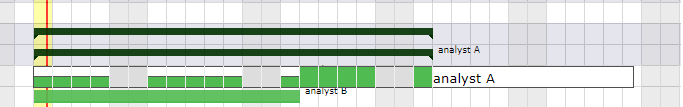

Activates treatment of the validated work based on the sum of the work of the project orders otherwise it will be calculated on the sum of the validated work of the activities.
Estimation of quality level of project (result of audits).
Trend
Trend of global project health.
Overall progress
Overall progress to be selected in a defined list.
Fix planning
Box checked indicates the planning of the project is frozen, and its sub-projects.
Non extendable project
When project perimeter is fixed you can’t addor delete elements to this project, move elements to or from this project.
Under construction
Box checked indicates the project is under construction.
Exclude from global plan
Do not show the not plannable items for this project on the global planning view. This means that only standard planning items will be displayed excluding actions, decisions, deliveries.
Validated work treatment
Activates treatment of the validated work based on the sum of the work of the project orders otherwise it will be calculated on the sum of the validated work of the activities.
During an assignation, some work is initially planned on this activity for the resource.
Real work allocation
For a resource, assigned activities are tasks in which he can entry the Real work
Parent activities
Activities can have parents to regroup activities or planned tasks.
Activities can be sorted inside their parent activity, on the Gantt planning view, using drag and drop in the list area.
Parent activity must belong to the same project.
When a parent activity contains an assignment with a workload then the planning mode applied does not correspond to any of those proposed in the list of planning modes.
On a parent activity the planning mode is no longer displayed.
planning example
Example with a parent activity with no load and 2 sub-activities with 10 days of load for each of the resources (analyst 1 and analyst 2).
In this case, the parent activity is the result of the sub-activities that compose it.
If workload is entered for a resource on a parent activity, and this resource is also scheduled on child activities, then the total of this workload will be displayed on the parent activity for this resource.
The dates and duration section of the activity shows the overall load for a resource.
20 workload days = 10 workload days for Analyst A for parent activity + 10 workload days for Analyst A for activity A.
The mother activity, even if it has priority in relation to its position in the WBS, will distribute the workload assigned for the resource after the workload on the sub-activities.

the load of the mother activity is planned after the sub-activities¶